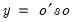

@qform Matrix Algebra Quadratic form. Syntax: @qform(s, o) s: sym o: vector, matrix, sym Return: number, sym Returns the quadratic form of a symmetric matrix s, with a vector or matrix object o.  • if o is a vector, the function returns a scalar • If o is a matrix, the function returns a sym Examples sym s1 = @inner(@mnrnd(20, 4)) vector v1 = @mrnd(4) scalar q1 = @qform(@inverse(s1), v1) generates a symmetric matrix S1, then computes the quadratic form using the inverse of S1, and the randomly generated vector V1. matrix m1 = @mrnd(4, 5) sym q2 = @qform(@inverse(s1), m1) computes the matrix form of the quadratic form, returning a sym. Cross-references See also @inner and @outer.